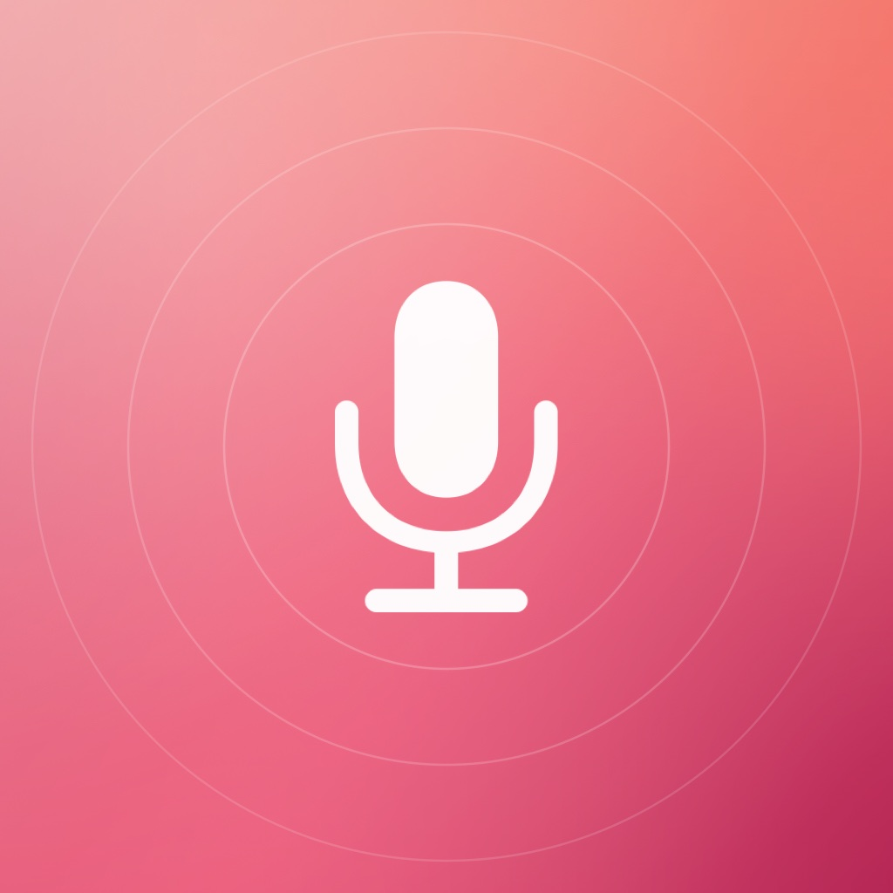
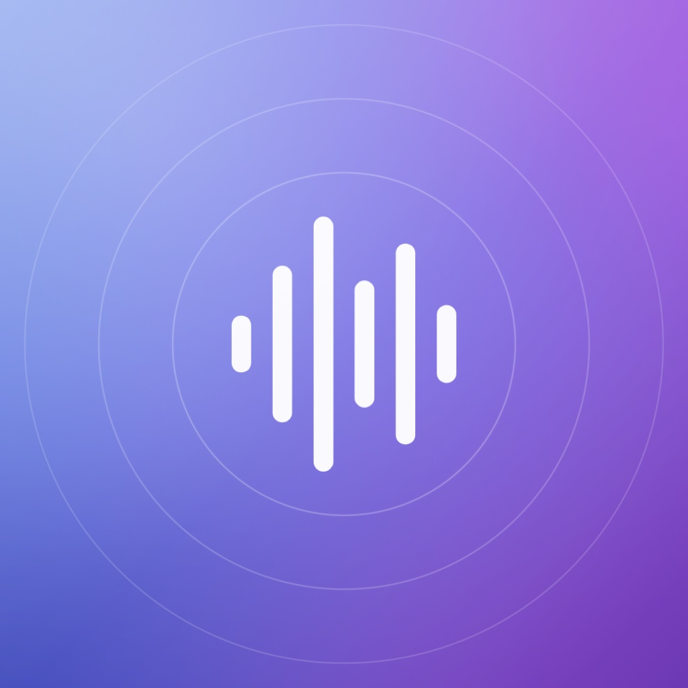

封面风格示意 · 非实际电台台标有些陪伴，
只需要按下播放。
AirAtlas 通过社区维护的 Radio Browser 目录发现电台，并直接连接独立广播机构的直播流。无论想听音乐、新闻还是谈话，都从一次探索开始。电台可用性取决于广播机构和你所在的网络。
循着声音，探索世界
按国家、地区与整理后的分类发现电台，也可以搜索全球目录和自己的资料库。
喜欢的声音，留在身边
收藏电台、回顾最近收听，也能手动添加你熟悉的网络电台地址。
让收听自然继续
原生 iOS 播放体验，配合迷你播放器、系统媒体控制与睡眠定时器。
你的资料库，保存在你的设备上。
收藏、历史与偏好在本地保存。关于第三方网络连接，我们也会明确说明。